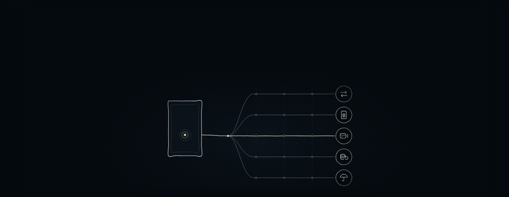
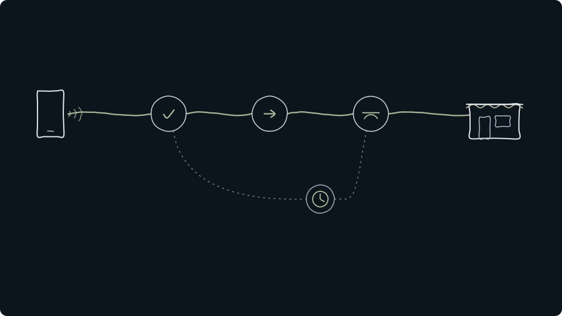
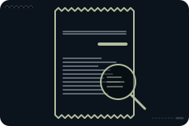

Hvad sker der, når du betaler?
Fem slags tjenester og fem forskellige måder at tjene penge på.
Når du betaler med telefonen eller handler aktier i en app, ser det ens og enkelt ud. Bag skærmen skal oplysninger kontrolleres, penge flyttes og aftaler registreres. Temaet samler de selskaber i fonden, der laver den slags finansielle tjenester med teknologi. Det kaldes fintech.
Siden viser, hvor meget hver slags fylder, og hvad selskaberne laver.
Fonden
Fintech i fonden
Henter fondens opgørelse…
Fintech er et af de 12 temaer, NewDeal Invest deler fondens selskaber op i.
Temaet handler om noget, de fleste gør hver dag.
Kortbetalinger i Danmark, 2025
- Betalinger med kort2.863 mio.
- Via digital walletnæsten hver 3.
En digital wallet er en betalingsapp i fx telefonen, hvor kortet er gemt. Tallene viser, hvor almindelige digitale betalinger er. De siger ikke, hvor mange af betalingerne der går gennem temaets selskaber.
Kilder: Danmarks Nationalbank, 02.02.2026 (åbner i nyt vindue) og Danmarks Statistik, FOLK1A (åbner i nyt vindue)
Hvad der vejer mest
Intet enkelt stort selskab
Fintech
Fem slags tjenester
Kvitteringen har fem linjer. Hver linje viser, hvad der sker for kunden, og hvordan selskaberne tjener penge. Tryk på en linje for at se mere.
Kvittering
Andel af fonden
-
Hvad sker der Kunden handler aktier og andre værdipapirer i en app. Hos eToro kan brugerne også følge hinanden som i et socialt netværk.
Sådan tjener selskaberne penge
Indtægten afhænger blandt andet af, hvor meget kunderne handler. eToro, temaets største selskab, havde ca. 3,81 mio. konti med penge ved udgangen af 2025. Robinhood havde 27,0 mio. kunder med penge på kontoen ved udgangen af 2025. En del af handlen er krypto, som har sit eget tema i fonden: Krypto.
Tryk på et selskab for at se, hvad det laver.
-
Hvad sker der Kunden låner, sparer og betaler i én app. Den slags banker kaldes også neobanker, fordi de kun findes digitalt.
Sådan tjener selskaberne penge
Mest på renter af lån og på gebyrer, fx et lille gebyr, når kunden betaler med kortet. SoFi har sin egen bank. Chime er ikke selv en bank. Bankydelserne leveres af The Bancorp Bank og Stride Bank. Banken Nu startede i Brasilien og havde 131 mio. kunder ved udgangen af 2025.
Tryk på et selskab for at se, hvad det laver.
-
Hvad sker der Pengene flyttes fra kunden til butikken, i en fysisk butik eller på nettet.
Sådan tjener selskaberne penge
Typisk et lille gebyr pr. betaling, mange gange. Shift4 leverer software til butikker og sørger for, at kundernes betalinger går igennem. Klarna og Affirm lader også kunden betale over tid. Klarna havde ca. 118 mio. aktive forbrugere og ca. 960.000 forhandlere ved udgangen af 2025. Hos Affirm var 70 % af det, kunderne handlede for i regnskabsåret til 30.06.2026, lån med renter.
Tryk på et selskab for at se, hvad det laver.
-
Hvad sker der En låneansøgning bliver vurderet, før pengene udbetales.
Sådan tjener selskaberne penge
En långiver tjener på renter, men kan miste penge på lån. Upstart og Pagaya laver computermodeller, som långivere bruger til at vurdere, om den, der søger om lån, kan betale tilbage. Figure laver boliglån med sikkerhed i boligens friværdi og registrerer lånene på blockchainen Provenance.
Tryk på et selskab for at se, hvad det laver.
-
Hvad sker der Kunden betaler for en forsikring og får penge, hvis skaden sker.
Sådan tjener selskaberne penge
På forskellen mellem det, kunderne betaler, og det, skaderne og driften koster. Root sætter prisen på bilforsikring efter, hvordan kunden kører. Lemonade tilbyder lejer-, hus-, dyre-, bil- og livsforsikring. Kunden tegner forsikringen og anmelder skader i en chat med et computerprogram (en chatbot).
Tryk på et selskab for at se, hvad det laver.
Tallet til højre og bjælken under det viser linjens andel af fonden.
Mærket ved et selskab betyder, at det også hører til et andet tema.
Sea, Grab og MercadoLibre hører til Platformsøkonomi, Coinbase og Circle til Krypto og Oscar Health til Sundhed og biotek. De tælles under deres egne temaer og indgår derfor ikke i fintechs andel.
Syv af temaets egne selskaber laver også noget, der hører til et andet tema: Upstart og Lemonade (Software & AI), eToro, Robinhood og Figure (Krypto) og Global-e og Kaspi.kz (Platformsøkonomi). De har et mærke i kvitteringen, og i fondens opdeling tælles de kun med her.
Ved kassen
Et tryk med kortet
Wall Street Journal skiller en kortlæser ad og viser, at kortet sender en engangskode i stedet for kortnummeret. Videoen er ikke fondens holdning.
Set udefra
Betalinger i nyhederne
Her er udvalgte opslag og videoer fra medier, en centralbank og selskaber. De er ikke fondens holdning. Opslag og videoer hentes først, når du trykker på dem.
Fra 2022Hvem tager et gebyr, når du betaler med kortThe Wall Street Journal, på engelsk. Den handler om amerikanske kreditkort. I EU er reglerne for kortgebyrer anderledes.
Sådan tjener betaling over tid pengeThe Wall Street Journal, 2025, på engelsk. Tallene i videoen gengives ikke her.
Læs mere
Hvordan virker digitale betalinger?Bank of England, 2026, på engelsk. En medarbejder i Bank of England forklarer, hvordan pengene flyttes mellem bankerne. Beskrivelsen bygger på Bank of Englands egen tekst til videoen. Tallene i videoen gengives ikke her.
Digital tegnebog
Bloomberg @business · på engelsk
Kort fortalt Ifølge Bloomberg siger den britiske konkurrencemyndighed, at Apples kontrol over iPhone forhindrer andre betalingsapps i at konkurrere med Apples digitale tegnebog.
Apple står under temaet Platformsøkonomi.
Digitale penge
Reuters @ReutersBiz · på engelsk
Kort fortalt Ifølge Reuters har Sveriges centralbank, Riksbanken, genoptaget debatten om en digital e-krone, i takt med at den digitale euro og stablecoins bliver en større udfordring. Stablecoins er kryptopenge, der er lavet til at følge værdien af fx dollar eller euro.
Betalinger
Bloomberg @business · på engelsk
Kort fortalt Ifølge Bloomberg samarbejder Visa med BILL og Billtrust om at lade AI-assistenter, der selv kan udføre opgaver, starte og gennemføre virksomheders betaling af regninger, uden at et menneske skal bekræfte sin identitet ved hver betaling.
Opslaget handler om Visa og BILLs betalingstjenester.
Opslagene er udvalgt af teamet bag NewDeal Invest. „Kort fortalt“ er vores danske gengivelse. Afsenderne og de nævnte selskaber står ikke bag denne side.

Det skal man vide om temaet
- Kredittab. Selskaber, der låner penge ud eller lader kunden betale over tid, kan miste penge, hvis kunderne ikke betaler tilbage.Kilde: Klarna, årsrapport (20-F) 2025 (åbner i nyt vindue)
- Svindel. Betalinger skal kontrolleres på et splitsekund, og svindel kan koste selskaberne penge.Kilde: Shift4, årsrapport (10-K) 2025 (åbner i nyt vindue)
- Regler og tilsyn. Banker, betalingsselskaber og forsikringsselskaber er under tilsyn, og nye regler kan ændre deres forretning.Kilder: SoFi, 10-K 2025 (åbner i nyt vindue), Root, 10-K 2025 (åbner i nyt vindue)
- Kundernes aktivitet. Handelsplatforme tjener mindre, når kunderne handler mindre.Kilde: Robinhood, årsrapport (10-K) 2025 (åbner i nyt vindue)
- Afhængighed af andre. Nogle selskaber har ikke selv tilladelse til at drive bank. De bruger en anden banks licens, eller de tjener penge på, at långivere bruger deres modeller. Ændrer de andre vilkårene eller stopper aftalen, rammer det selskabets forretning.Kilder: Chime, 10-K 2025 (åbner i nyt vindue), Upstart, 10-K 2025 (åbner i nyt vindue)
Læs mere: sådan leder et kortselskab efter svindel
Selskabets egen videoSådan leder Visa efter svindelVisa, 2026, på engelsk. Visa er ikke blandt fondens selskaber. Tallene i videoen er Visas egne og gengives ikke her.
Videre
Fondens andre temaer

Kilder og kreditering
- Andele hentes fra fondens seneste validerede opgørelse. Datoen vises sammen med tallene. Temaer og grupper: NewDeal Invests redaktionelle opdeling. Beskrivelserne bygger på selskabernes daterede årsrapporter.
- Kortbetalinger og digitale wallets: Danmarks Nationalbank, 02.02.2026 (åbner i nyt vindue). Befolkning: Danmarks Statistik, tabel FOLK1A (åbner i nyt vindue).
- Selskabernes tal og beskrivelser: eToro, 20-F 2025 (åbner i nyt vindue), Klarna, 20-F 2025 (åbner i nyt vindue), Affirm, 10-K (år til 30.06.2026) (åbner i nyt vindue), Robinhood, 10-K 2025 (åbner i nyt vindue), Nu Holdings, 20-F 2025 (åbner i nyt vindue), SoFi, 10-K 2025 (åbner i nyt vindue), Chime, 10-K 2025 (åbner i nyt vindue), Upstart, 10-K 2025 (åbner i nyt vindue), Root, 10-K 2025 (åbner i nyt vindue), Shift4, 10-K 2025 (åbner i nyt vindue), DLocal, 20-F 2025 (åbner i nyt vindue), Kaspi.kz, 20-F 2025 (åbner i nyt vindue), Lemonade, 10-K 2025 (åbner i nyt vindue) og Ategrity, 10-K 2025 (åbner i nyt vindue).
Kreditering
Tegninger, ikoner og videoplakater. Illustration: NewDeal Invest.
Videoerne er fra The Wall Street Journal, Bank of England og Visa og vises fra YouTube, først når du trykker på dem. Opslagene er fra X. Logoer tilhører de enkelte selskaber og viser kun, hvilke selskaber fonden ejer aktier i. Afsenderne og selskaberne står ikke bag denne side, og der er intet samarbejde med dem.